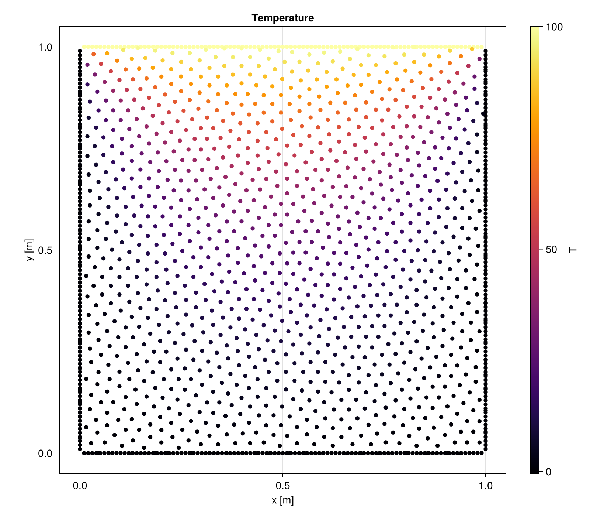

Getting Started
This tutorial walks through a complete 2D steady-state heat conduction simulation — from geometry to results. Along the way, it explains the key types and how they compose.
Installation
using Pkg
Pkg.add(url="https://github.com/JuliaMeshless/WhatsThePoint.jl")
Pkg.add(url="https://github.com/JuliaMeshless/RadialBasisFunctions.jl")
Pkg.add(url="https://github.com/JuliaMeshless/Macchiato.jl")Step 1: Define the Geometry
Every simulation starts with a point cloud — a set of scattered points that discretize the domain boundary and interior. WhatsThePoint.jl handles this.
using WhatsThePoint
using Unitful: m, °
# Create a 1m × 1m rectangle boundary with points and normals
part = PointBoundary(rectangle(1m, 1m)...)
# Split the continuous boundary into 4 named surfaces at 75° corners
split_surface!(part, 75°)
# This creates :surface1 (bottom), :surface2 (right), :surface3 (top), :surface4 (left)PointBoundary{Meshes.𝔼{2}, CoordRefSystems.Cartesian2D{CoordRefSystems.NoDatum, Unitful.Quantity{Float64, 𝐋, Unitful.FreeUnits{(m,), 𝐋, nothing}}}}
├─396 points
└─Surfaces
├─surface1
├─surface2
├─surface3
└─surface4
Splitting at corners creates named surfaces so you can assign different boundary conditions to each edge. Now fill the interior:
# Discretize: place interior points at ~1/33 m spacing
dx = 1/33 * m
cloud = discretize(part, ConstantSpacing(dx), alg=VanDerSandeFornberg())PointCloud{Meshes.𝔼{2}, CoordRefSystems.Cartesian2D{CoordRefSystems.NoDatum, Unitful.Quantity{Float64, 𝐋, Unitful.FreeUnits{(m,), 𝐋, nothing}}}}
├─1543 points
├─Boundary: 396 points
│ ├─surface1
│ ├─surface2
│ ├─surface3
│ └─surface4
├─Volume: 1147 points
└─Topology: NoTopology
The resulting PointCloud contains both boundary points (organized by surface) and interior (volume) points.
Step 2: Define the Physics Model
Physics models define the PDE being solved. For heat conduction, use SolidEnergy:
using Macchiato
model = SolidEnergy(k=1.0, ρ=1.0, cₚ=1.0)Energy: (k = 1.0, ρ = 1.0, cₚ = 1.0)This defines the heat equation with thermal conductivity k, density ρ, and specific heat cₚ.
SolidEnergy is one of several built-in models, but you can define a model for any PDE. See the Custom PDEs tutorial to learn how.
Step 3: Define Boundary Conditions
Boundary conditions are specified as a Dict mapping surface names to BC objects:
bcs = Dict(
:surface1 => Temperature(0.0), # bottom: T = 0
:surface2 => Temperature(0.0), # right: T = 0
:surface3 => Temperature(100.0), # top: T = 100
:surface4 => Temperature(0.0) # left: T = 0
)Dict{Symbol, PrescribedValue{Macchiato.var"#Temperature##0#Temperature##1"{Float64}}} with 4 entries:
:surface4 => Temperature
:surface3 => Temperature
:surface2 => Temperature
:surface1 => TemperatureTemperature is a Dirichlet BC — it prescribes the value directly. The BC system is organized by mathematical type:
| Type | Meaning | Energy Examples |
|---|---|---|
| Dirichlet | Prescribes value: u = g | Temperature |
| Neumann | Prescribes flux: ∂u/∂n = q | HeatFlux, Adiabatic |
| Robin | Mixed: α u + β ∂u/∂n = g | Convection |
All BCs accept either a constant value or a function (x, t) -> value for spatially or temporally varying conditions:
# Spatially varying temperature
Temperature((x, t) -> 100.0 * sin(π * x[1]))
# Insulated boundary (zero heat flux)
Adiabatic()
# Convective cooling: h=10, k=1, T_ambient=25
Convection(10.0, 1.0, 25.0)See the API Reference for the complete list of boundary condition types.
Temperature, HeatFlux, and Adiabatic are constructor functions that create PrescribedValue, PrescribedFlux, and ZeroFlux instances with a physics-meaningful display name. When defining a custom PDE, you can use the generic constructors directly — PrescribedValue(0.0), PrescribedFlux(1.0), ZeroFlux() — with no trait boilerplate required.
Step 4: Create the Domain
The Domain ties geometry, boundary conditions, and model together:
domain = Domain(cloud, bcs, model)domain1: DomainSolidEnergy{Float64, Float64, Float64, Nothing}[Energy: (k = 1.0, ρ = 1.0, cₚ = 1.0)]The Domain validates that every BC key matches a surface in the point cloud.
Step 5: Create and Run the Simulation
sim = Simulation(domain)
run!(sim)Simulation
├── Mode: Steady-state
├── Time: 0.0
└── Running: falseSimulation defaults to steady-state when no mode is given:
Steady()(default) — assemblesAx = band solves with LinearSolve.jlTransient(Δt=..., stop_time=...)— builds an ODE right-hand side and integrates with OrdinaryDiffEq.jl
For steady-state, run! calls LinearSolve.LinearProblem(domain) internally, which:
- Asks the model to build its system matrix and RHS via
make_system - Applies each BC by modifying the appropriate matrix rows
- Solves the sparse linear system
Step 6: Extract and Visualize Results
using WhatsThePoint: coords
using Unitful: ustrip
using CairoMakie
# Extract the temperature field
T = temperature(sim)
# Visualize the temperature field
pts = points(cloud)
x = [ustrip(coords(pt).x) for pt in pts]
y = [ustrip(coords(pt).y) for pt in pts]
fig = Figure(; size=(800, 700))
ax = Axis(fig[1, 1]; title="Temperature", xlabel="x [m]", ylabel="y [m]", aspect=DataAspect())
sc = scatter!(ax, x, y; color=T, colormap=:inferno, markersize=8)
Colorbar(fig[1, 2], sc; label="T")
fig
Each physics model has dedicated field extraction functions:
temperature(sim)— forSolidEnergydisplacement(sim)— forLinearElasticity, returns(ux, uy)or(ux, uy, uz)velocity(sim),pressure(sim)— forIncompressibleNavierStokes
Going Transient
Converting the same problem to a transient simulation requires minimal changes — add a time step and stop time, and set initial conditions:
# Same domain as before
sim = Simulation(domain, Transient(Δt=0.001, stop_time=1.0))
# Set initial temperature to 0 everywhere
set!(sim, T=0.0)
# Or use a function of position
set!(sim, T=x -> 50.0 * exp(-10 * ((x[1]-0.5)^2 + (x[2]-0.5)^2)))
# Run transient simulation (time-steps with Tsit5 by default)
run!(sim)
T_final = temperature(sim)1543-element Vector{Float64}:
0.20330265032473444
0.224011134244943
0.24633582741930005
0.2703441446182528
0.2960995623535133
0.3236607039553265
0.35308038730012675
0.38440464357012594
0.4176717166390754
0.4529110538424459
⋮
46.02241602209145
46.754178028800666
39.6273336444171
46.29706705154477
46.75818314208387
46.98082559817066
45.228903854811
46.173927198751706
45.96642745158686